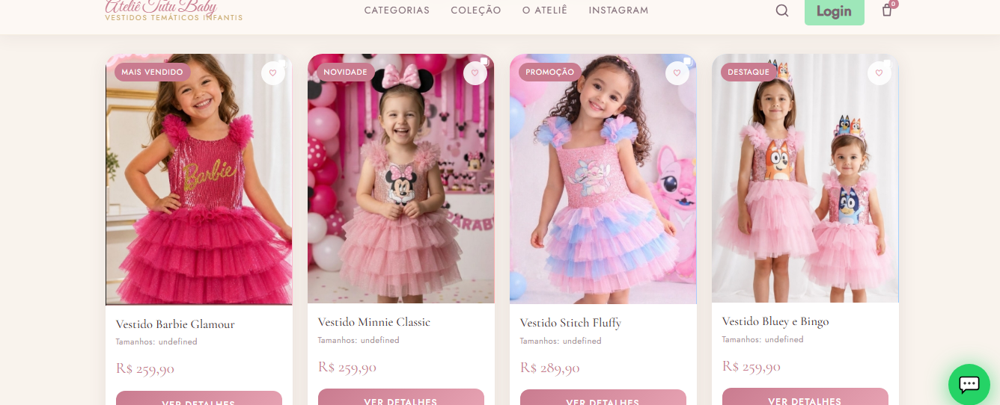
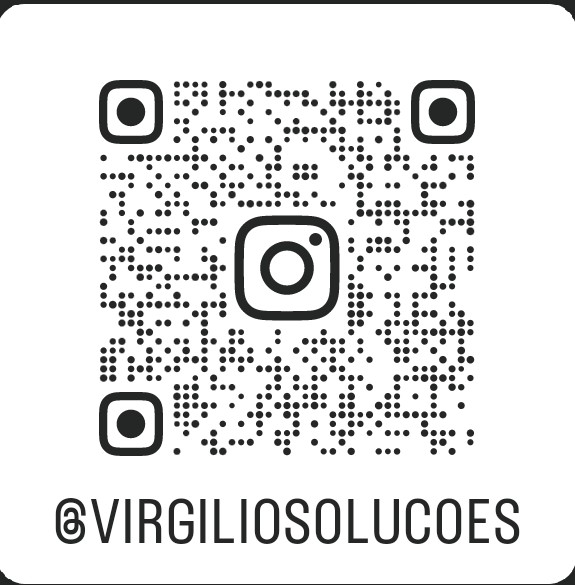

Uma empresa em crescimento de desenvolvimento de software fundada por estudantes de Planejamento e Controle da Produção. Unindo gestão, processos e tecnologia para resolver problemas reais de empresas.
Somos pessoas em formação que estão transformando conhecimento em projetos reais.
Estuda lógica de programação, arquitetura de sistemas e desenvolvimento web aplicados a processos reais de empresas.
Aplica ferramentas de PCP: Kanban, MRP, indicadores no desenvolvimento de produtos digitais e aplicativos.
Nossa formação nos coloca em contato direto com gestão, processos, logística e melhoria contínua. Estamos usando essa base para construir uma empresa de tecnologia.
A maioria das empresas convive com o mesmo tipo de desgaste operacional, dia após dia.
A tecnologia pode transformar processos complexos em sistemas mais organizados, integrados e eficientes.
Desenvolvemos soluções de software para problemas reais.
Uma linha de evolução, não uma meta única.
Um e-commerce que estamos desenvolvendo para um cliente real. O objetivo é criar uma estrutura própria de vendas online, reduzindo a dependência de pedidos feitos exclusivamente pelo WhatsApp.

O que você acabou de ver é apenas a parte que o usuário enxerga.
Um aplicativo de organização pessoal e gestão empresarial, construído com ferramentas de PCP.
Esse projeto também é a base concreta da nossa frente de atendimento a pessoas físicas e funciona como laboratório para desenvolvimento de conhecimento técnico:
A combinação entre Planejamento e Controle da Produção e tecnologia.
Não queremos começar pelo código. Queremos começar pelo problema.
Nossa formação em PCP nos treina a entender processos, identificar causas de um problema e buscar melhoria contínua antes de pensar na implementação tecnológica. O código vem depois como consequência de um raciocínio, não como ponto de partida.
Construir uma empresa capaz de transformar problemas complexos em soluções tecnológicas simples, úteis e escaláveis.
Estágio atual: Construindo os primeiros projetos
Tem um problema que poderia ser resolvido com tecnologia?
